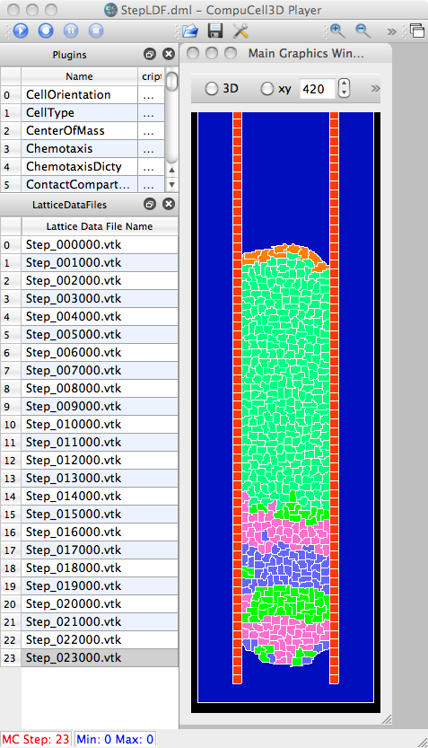
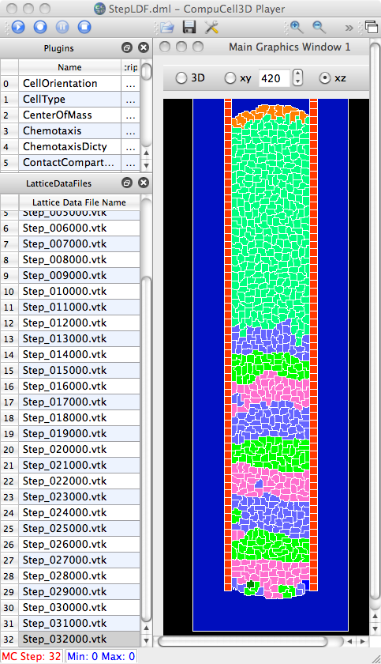
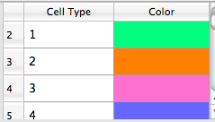

 
Initial results for KADL=0.035, with the following colormap. (0.035 was original,"best" parameter for clock from Julio/Susan).

From Julio: cell type - color 1 - light green 2 - orange 3 - light red / pink 4 - light blue 5 - green 6 - x 7 - x 8 - red / dark red 9 - blue 10 - dark green ... 20 - gray